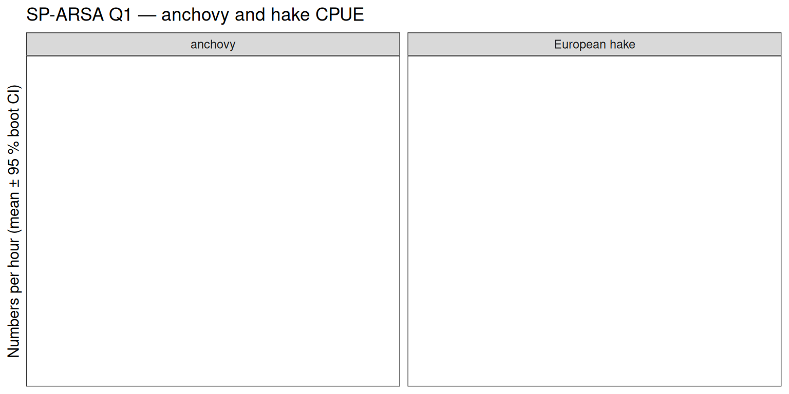
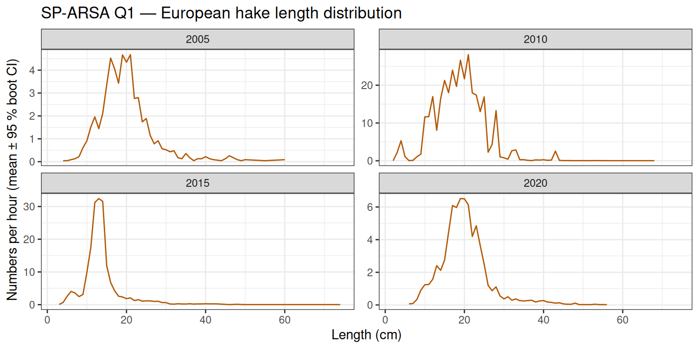

Catch products: from raw exchange data to survey indices
Three functions cover most survey-index workflows:
| Function | Input | Output | Zero-fill |
|---|---|---|---|
dr_catch_by_length() |
raw HH + HL | one row per haul × species × length bin | no |
dr_catch_by_haul() |
output of above | one row per haul × species | yes |
dr_expand_length() |
output of above | one row per haul × species × length bin | yes |
The typical pipeline is:
dr_catch_by_length(hh, hl) → filter → dr_catch_by_haul(hh)
↘ dr_expand_length(hh)dr_catch_by_length() reads the NumberAtLength field and applies DataType-aware subsampling corrections. It returns only observed rows — no zeros. The downstream functions add the zero hauls needed for unbiased CPUE estimation.
NS-IBTS Q1 — North Sea demersal survey
Why zero hauls matter
Species are absent from many hauls. Dropping those zeros inflates the mean CPUE and makes trends unreliable. dr_catch_by_haul() adds an explicit zero row for every haul where a species was not caught (within the same Survey/Year/Quarter stratum).
species_ns <- c("Atlantic herring", "Atlantic cod")
cpue_ns <- cbl |>
filter(Survey == "NS-IBTS", Quarter == 1, species %in% species_ns) |>
dr_catch_by_haul(hh) |>
collect()
cpue_ns_nozero <- cpue_ns |> filter(n_hour > 0)
bind_rows(
cpue_ns |> mutate(zeros = "with zero hauls"),
cpue_ns_nozero |> mutate(zeros = "without zero hauls")
) |>
ggplot(aes(Year, n_hour, colour = zeros)) +
stat_summary(fun.data = "mean_cl_boot", geom = "pointrange", size = 0.3) +
facet_wrap(~species, scales = "free_y") +
scale_colour_manual(values = c("with zero hauls" = "#2166ac",
"without zero hauls" = "#d73027")) +
labs(y = "Numbers per hour (mean ± 95 % boot CI)",
x = NULL, colour = NULL,
title = "NS-IBTS Q1 — effect of zero-haul inclusion on CPUE") +
theme_bw() +
theme(legend.position = "bottom")
Including zero hauls consistently lowers the mean and widens the confidence interval — the difference is most pronounced in years with low prevalence.
Length distributions for selected years
dr_expand_length() propagates zero observations across the full length × haul grid, enabling length-structured indices. Here we show cod length distributions for three decades.
years_sel <- c(1985, 1995, 2005, 2015)
cbl |>
filter(Survey == "NS-IBTS", Quarter == 1, species == "Atlantic cod",
Year %in% years_sel) |>
dr_expand_length(hh) |>
collect() |>
ggplot(aes(length_cm, n_hour)) +
stat_summary(fun.data = "mean_cl_boot", geom = "ribbon",
aes(ymin = after_stat(ymin), ymax = after_stat(ymax)),
alpha = 0.25, fill = "#2166ac") +
stat_summary(fun = mean, geom = "line", colour = "#2166ac") +
facet_wrap(~Year, scales = "free_y") +
labs(x = "Length (cm)", y = "Numbers per hour (mean ± 95 % boot CI)",
title = "NS-IBTS Q1 — Atlantic cod length distribution") +
theme_bw()
BTS Q3 — Southern North Sea flatfish survey
BTS covers the Dutch, Belgian and English coastal waters in summer. Common dab and plaice dominate; this survey also records seahorses consistently.
species_bts <- c("common dab", "European plaice", "common sole")
cbl |>
filter(Survey == "BTS", Quarter == 3, species %in% species_bts) |>
dr_catch_by_haul(hh) |>
collect() |>
ggplot(aes(Year, n_hour)) +
stat_summary(fun.data = "mean_cl_boot", geom = "pointrange",
colour = "#1b7837", size = 0.3) +
facet_wrap(~species, scales = "free_y") +
labs(y = "Numbers per hour (mean ± 95 % boot CI)",
x = NULL,
title = "BTS Q3 — flatfish CPUE indices") +
theme_bw()
Seahorse — a rare bycatch indicator
Seahorses (Hippocampus spp.) are rarely caught but their occurrence in trawl surveys is used as an indicator of seagrass habitat condition. BTS has the most consistent records in DATRAS.
seahorse_aphia <- cbl |>
filter(Survey == "BTS", grepl("Hippocampus", latin)) |>
distinct(aphia, latin, species) |>
collect()
cbl |>
filter(Survey == "BTS", aphia %in% !!seahorse_aphia$aphia) |>
dr_catch_by_haul(hh) |>
collect() |>
mutate(present = n_hour > 0) |>
group_by(Year, species) |>
summarise(prevalence = mean(present),
mean_cpue = mean(n_hour),
.groups = "drop") |>
ggplot(aes(Year)) +
geom_col(aes(y = prevalence), fill = "#c2a5cf", alpha = 0.7) +
geom_line(aes(y = mean_cpue / max(mean_cpue) * max(prevalence)),
colour = "#762a83", linewidth = 0.8) +
facet_wrap(~species) +
scale_y_continuous(
name = "Proportion of hauls with catch (bars)",
sec.axis = sec_axis(~ . * 1, name = "Scaled mean CPUE (line)")
) +
labs(x = NULL,
title = "BTS Q3 — seahorse prevalence and relative CPUE") +
theme_bw()
SP-ARSA Q1 — Southern Iberian Atlantic survey
SP-ARSA covers the Gulf of Cádiz (southern Spain / northern Morocco). The small pelagic and demersal communities here differ markedly from the North Sea.
species_sp <- c("anchovy", "European hake")
cbl |>
filter(Survey == "SP-ARSA", Quarter == 1, species %in% species_sp) |>
dr_catch_by_haul(hh) |>
collect() |>
ggplot(aes(Year, n_hour)) +
stat_summary(fun.data = "mean_cl_boot", geom = "pointrange",
colour = "#b35806", size = 0.3) +
facet_wrap(~species, scales = "free_y") +
labs(y = "Numbers per hour (mean ± 95 % boot CI)",
x = NULL,
title = "SP-ARSA Q1 — anchovy and hake CPUE") +
theme_bw()
Hake length distribution
European hake is a key commercial species in Iberian waters. Length distributions illustrate how recruitment varies between years.
years_sp <- c(2005, 2010, 2015, 2020)
cbl |>
filter(Survey == "SP-ARSA", Quarter == 1, species == "European hake",
Year %in% years_sp) |>
dr_expand_length(hh) |>
collect() |>
ggplot(aes(length_cm, n_hour)) +
stat_summary(fun.data = "mean_cl_boot", geom = "ribbon",
aes(ymin = after_stat(ymin), ymax = after_stat(ymax)),
alpha = 0.25, fill = "#b35806") +
stat_summary(fun = mean, geom = "line", colour = "#b35806") +
facet_wrap(~Year, scales = "free_y") +
labs(x = "Length (cm)", y = "Numbers per hour (mean ± 95 % boot CI)",
title = "SP-ARSA Q1 — European hake length distribution") +
theme_bw()
How fast is it?
Ten of the most common NS-IBTS Q1 species — full CPUE pipeline from raw exchange data through to a collected data frame, timed with system.time().
species_10 <- c(
"Atlantic herring", "European sprat", "Norway pout",
"whiting", "haddock", "common dab",
"Atlantic cod", "grey gurnard", "Atlantic mackerel",
"European plaice"
)
t <- system.time(
cpue_10 <- cbl |>
filter(Survey == "NS-IBTS", Quarter == 1, species %in% species_10) |>
dr_catch_by_haul(hh) |>
collect()
)
cat(sprintf("10 species, all NS-IBTS Q1 years: %.1f s\n", t["elapsed"]))10 species, all NS-IBTS Q1 years: 4.1 s
cpue_10 |>
mutate(species = factor(species, levels = species_10)) |>
ggplot(aes(Year, n_hour)) +
stat_summary(fun.data = "mean_cl_boot", geom = "pointrange",
colour = "#2166ac", size = 0.2) +
facet_wrap(~species, scales = "free_y", ncol = 2) +
labs(y = "Numbers per hour (mean ± 95 % boot CI)", x = NULL,
title = "NS-IBTS Q1 — ten species CPUE indices") +
theme_bw()
A note on dr_expand_length() and large selections
Filter before expanding
dr_expand_length()builds a complete haul × species × length-bin grid for every combination present in the Survey/Year/Quarter stratum. The output size grows as:Filtering to one species before calling
dr_expand_length()is fast. Passing many species — or worse, an unfilteredcblacross multiple surveys — will produce a very large table and may exhaust memory or take minutes to collect.Rules of thumb:
- Always filter to a single survey, quarter, and a small set of species before calling
dr_expand_length().- If you only need haul-level totals (no length structure), use
dr_catch_by_haul()instead — it never materialises the length grid and is substantially faster.- When working with many species, iterate species-by-species rather than passing them all at once.
# Avoid — expands the full grid for all species across all surveys cbl |> dr_expand_length(hh) |> collect() # Correct — filter to one species first cbl |> filter(Survey == "NS-IBTS", Quarter == 1, species == "Atlantic cod") |> dr_expand_length(hh) |> collect()